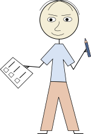

Templates
Templates
Templates
This page describes color themes usage and that's why itself uses the dark theme for demonstration.
As for now the program provides a quick start script described here. This page may be useful for understanding the program's working principles, and for possible new templates creation or existing templates modification.
In this program Mustache template engine is used for HTML templates processing. A simple template file may look like this:
<!DOCTYPE html>
<html>
<head><title>{{title}}</title>
<meta charset="utf-8">
{{{styles}}}
</head>
<body>
{{{content}}}
<hr />
<p style="font-size: smaller;">Generated by {{exec_name}} {{exec_version}}
{{generation_date}} {{generation_time}}</p>
</body>
</html>It consists of static HTML code and Mustache tags that define substitutions and other kind of template processing actions. In this simple example only substitutions are defined. The tags with three pairs of curly braces will be substituted with the provided values without change. The tags with two pairs of curly braces will be substituted with the HTML-escaped provided values.
The program provides values for the following keys by default:
| Tag key | Description |
|---|---|
{{title}} |
The page title |
{{{styles}}} |
Included and/or linked CSS |
{{{content}}} |
The result of the Markdown document processing |
{{exec_name}} |
The self name provided by the program |
{{exec_version}} |
The program version (meaning the numbers, not Python or Java) |
{{generation_date}} |
The generation date (YYYY-MM-DD) |
{{generation_time}} |
The generation time (hh:mm:ss) |
{{source_file}} |
The source text file resolved relatively to the current HTML page |
The other tags may be provided by plugins that are described in the separate section.
Important
The number of curly braces pairs (two or three) is meaningful. Use them for the certain tags as it's presented in the table above.
This documentation is created using an extended template that can be easily reused in other
documentation projects. The template file location is doc_src/templates/multipage.html.
There's also the other template located at doc_src/templates/default.html. This is a single-page
template that is used by the Windows context menu scripts. It may also be used manually for
single-page documents creation.
This documentation uses a set of CSS files. The information about this files location may be found in the template files. The main CSS files are:
doc/layout/styles.css, mainly defines appearance of the page content;doc/layout/layout.css, defines appearance and geometry (like the header and the sidebar)
of the multipage.html template and redefines some rules for the page content;doc/custom.css, is intended for customization in the certain projects. This way the above
CSS files will stay unchanged and may be safely replaced with newer versions when they appear
in this project.There's a mechanism for defining and using color themes. A theme is a set of CSS files located according to the masks:
doc/themes/<theme_name>_content.css anddoc/themes/<theme_name>_layout.cssThe <theme_name> is defined by the variable theme in the argument file
md2html_args.json. The complete declaration may look like this: "theme": "light_default",
where light_default is the currently used theme name. As for now, two themes are defined:
light_default and dark_default.
The quick start script creates and defines the light theme only. To use the dark theme:
dark_default_content.css and dark_default_layout.css to the
doc/themes directory;dark_default to the variable theme in the file md2html_args.json;
In this page, variable "theme": "dark_default" is defined in the page variables section,
so this page is rendered using the dark theme.

Also see here to know about handling images on dark backgrounds. The picture on the left has thin black elements (arms, hands, feet and hair) that doesn't look well on the dark background. The picture on the right has local white underlying plate and probably looks better.